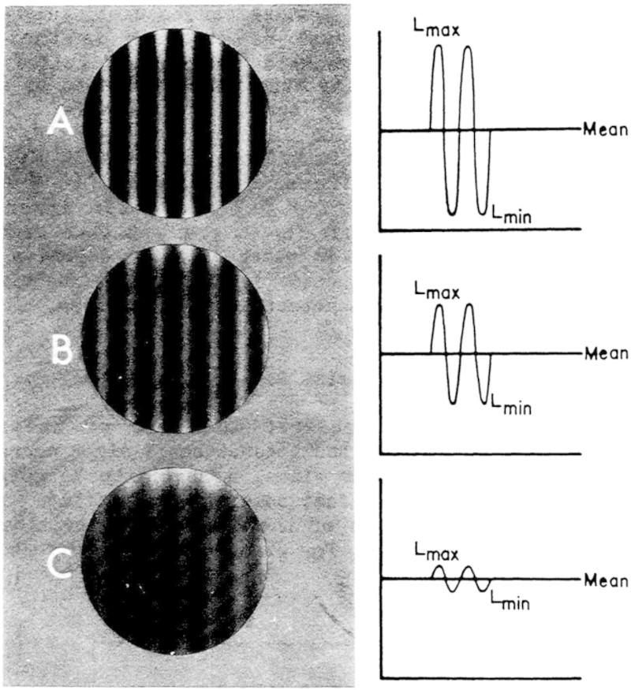

为什么对比敏感度的视标亮度是正弦变化的？(0)
我知道你对此有疑问很久了，查了很多很多眼科书也没有讲清楚的。因为答案根本就不在眼科书上，这大概是个定理：“当你需要深入了解时，一定是眼科书里没有的”。
我将连载几篇仔细讲解一下这个问题。以表达我对眼科先贤的崇敬。
注意，此知识不宜拿去炫耀，可以科普不宜提问，毕竟其中涉及到的东西远超眼科教材。
正弦光栅视标

左图是视标的图像，右图是视标亮度，亮度的变化为正弦函数。对比度分别是0.85(A), 0.50(B), 0.10(C)
图片来源: Photographs taken from transparencies provided by Michael Miller, Department of Neurology, Mount Sinai School of Medicine, and Wolkstein et al., 1980. Reprinted with permission from I. Bodis-Wollner. Copyright 1980 by J. B. Lippincott Company.
引自https://www.ncbi.nlm.nih.gov/books/NBK219042/
历史
按照这本1985年的《Emergent Techniques for Assessment of Visual Performance》 中关于对比敏感度CSF检查手段的综述，最早正弦光栅视标是在Otto. H. Schade于1956年发表的文章中出现。
This use of sine wave gratings was first introduced in vision by Schade (1956) and was subsequently used by early investigators to measure basic visual sensitivity (Westheimer, 1960; DePalma and Lowry, 1962; Campbell and Robson, 1968).
这篇神作是： Optical and Photoelectric Analog of the Eye （被引用620次） 全文
但是，太难，我没看懂。
在1968年Campbell FW, Robson JG.发表的文献 Application of Fourier analysis to the visibility of gratings （被引用3394次） 之中进行了更详细的解释。全文
这一篇好一些，起码有我认识的公式和图片。大概因此被引用次数高很多吧。
接下来我会慢慢解释为什么对比敏感度的检查视标亮度是正弦变化的。会有一些公式，但我尽量附图直观说明。